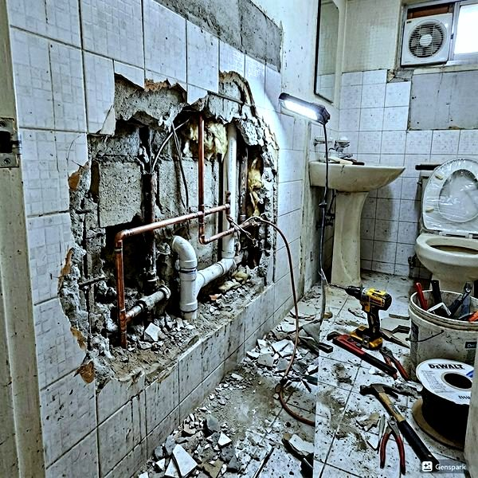
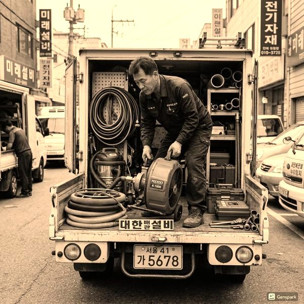
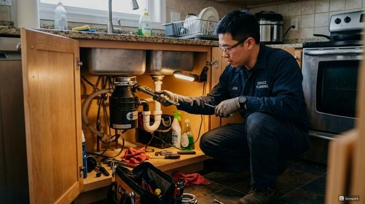

공장·산업시설 배관 유지보수 가이드
2026년 4월 12일 | 제우스시설관리
공장과 산업시설의 배관은 가정용과 비교할 수 없는 규모와 복잡성을 가집니다. 배관 사고 시 생산 라인 중단, 환경오염, 작업자 안전 위협 등 피해가 막대합니다. 체계적인 유지보수 프로그램이 필수입니다.

산업시설 배관 점검 항목: 부식 및 마모 상태, 밸브 작동 여부, 플랜지 연결부 누수, 배관 지지대 상태, 보온재 손상 여부. 이 항목들을 월 1회 육안 점검하고, 분기별 1회 전문가 정밀 점검을 시행해야 합니다.
제우스시설관리는 산업시설 전용 고성능 고압세척기(200bar 이상)를 보유하고 있습니다. 대구경 배관의 스케일, 슬러지, 녹 등을 효과적으로 제거합니다. 관로탐지기로 지하 매설 배관의 위치를 파악하고, 내시경 카메라로 배관 내부를 촬영하여 상태를 기록합니다.

산업안전보건법에 따라 특정 배관은 정기 안전 검사가 의무입니다. 검사를 소홀히 하면 과태료 부과는 물론, 사고 시 형사 책임까지 질 수 있습니다. 사전 예방적 관리가 법적 의무를 이행하면서 비용도 절감하는 최선의 방법입니다.

제우스시설관리는 산업시설 배관의 정기 관리 계약을 체결합니다. 월/분기/연간 단위로 유연한 관리 프로그램을 제공합니다. 28분 내 긴급출동 보장, 전화: 010-4406-1788